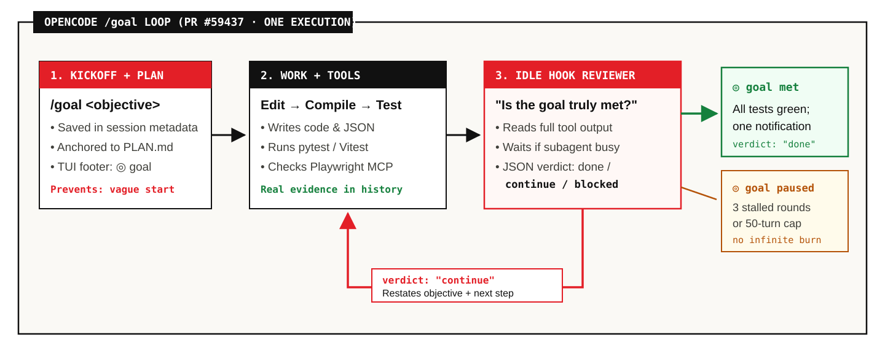
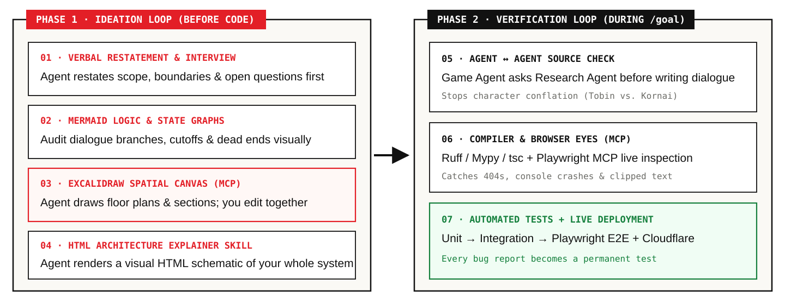
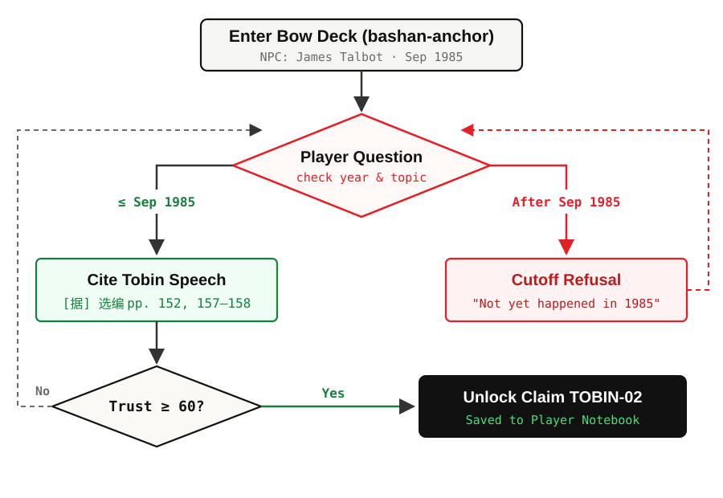
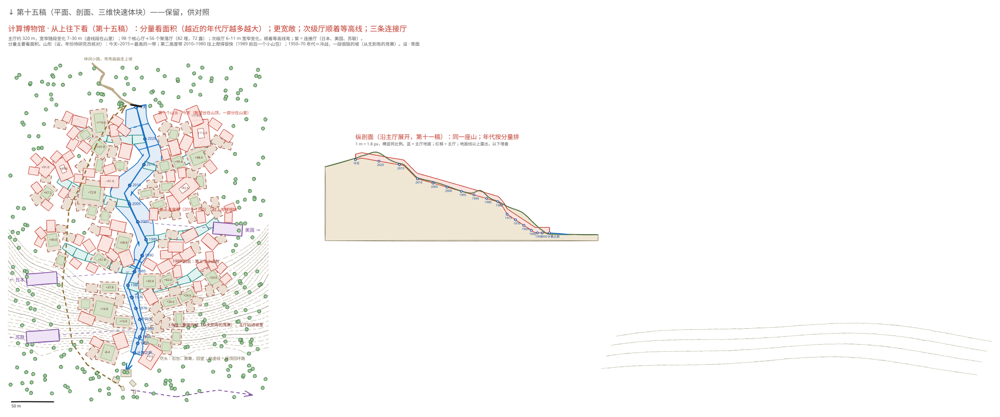
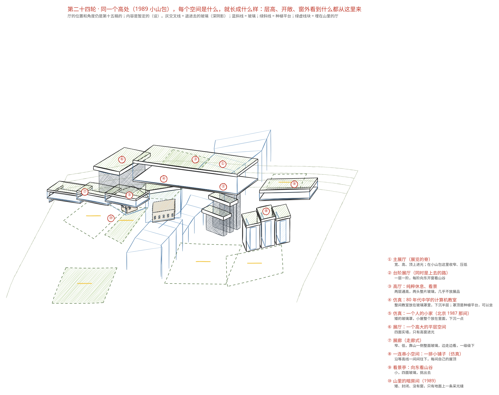
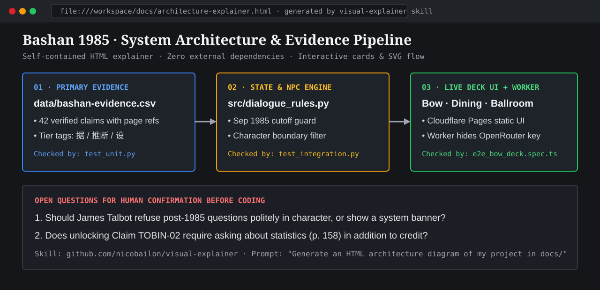
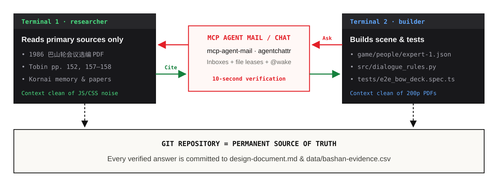
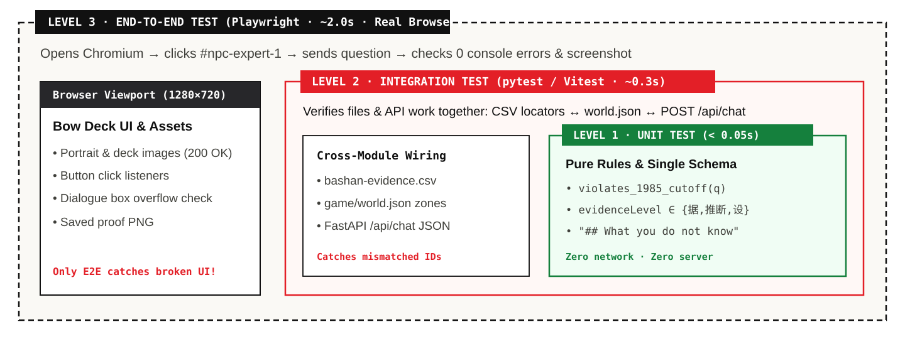
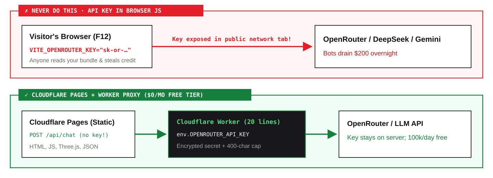

Long autonomous runs
OpenCode /goal, written plans, and preventing goal drift
Bo An · Lingnan University · 2026-11-11 · Reading edition · Slides
/goal, Feedback Loops, and DeploymentPreventing goal drift with planning, ideation schematics, automated tests, and Cloudflare shipping
Session Ten shows how to run long autonomous OpenCode /goal sessions without drifting—combining explicit planning, ideation schematics, browser and test feedback loops, and Cloudflare deployment.
/goal, planning, feedback loops, and deployment.Long autonomous runs
OpenCode /goal, written plans, and preventing goal drift
Ideation + Verification
Excalidraw, HTML diagrams, Browser MCP, and 3-tier tests
Cloudflare + Two Assignments
ship live this week; demonstrate full feedback loops next week
Tonight's session connects autonomous /goal execution and planning with ideation loops, browser/test verification loops, Cloudflare deployment, and the deliverables for Weeks 10 and 11.
An interactive element appears here on the slide.
Felix Rieseberg's Saltline (a 3.55 MB single-file Three.js game built over an 8-hour autonomous run) shows how far self-iterating agents can go—and why long runs require explicit plans and verification loops to avoid drifting.
/goal runs across turns until an internal reviewer checks done.
Merged in OpenCode PR #59437, /goal <objective> intercepts the session idle boundary and runs an internal reviewer over tool outputs—continuing automatically until the objective is verified done or pausing after 3 stalled rounds.
/goal statement anchored to a plan and machine checks./goal Implement Bow Deck dialogue per @docs/plan.md. Verify every claim against @data/bashan-evidence.csv, pass pytest -q, and verify 0 console errors in Playwright. ◎ Goal: Implement Bow Deck dialogue per @docs/plan.md… → Read docs/plan.md · data/bashan-evidence.csv ← Edit src/dialogue_rules.py · game/people/expert-1.json $ pytest -q && npx playwright test ◎ goal met · 6 passed, 0 browser errors
@docs/plan.md), never a vague wish@data/…) it must not crosspytest, Playwright) the reviewer can verifyAn effective /goal statement binds three things: a written specification (@docs/plan.md), explicit source constraints (@data/bashan-evidence.csv), and executable test commands (pytest, Playwright) that prove completion.
docs/plan.md before launching /goal.# Bow Deck Plan (Approved) 1. Scope: James Talbot on bashan-anchor only 2. Non-goals: NO Kornai quotes; NO post-Sep 1985 facts 3. Steps: - [x] Extract dialogue rules to src/dialogue_rules.py - [ ] Wire game/people/expert-1.json to /api/chat - [ ] Pass pytest + Playwright smoke check
docs/plan.md on disk never forgetsTab): agree on steps & non-goals before starting /goal[x] as each stage passesUse OpenCode's Plan mode (Tab) to agree on scope, non-goals, and step checkboxes in docs/plan.md before running /goal, preventing context compaction from causing goal drift.
Never act as a human copy-paste bridge for errors a machine can read directly.
When an agent cannot observe its own output, the student becomes a slow manual sensor. Giving the agent direct build, browser, and test feedback lets it iterate and fix regressions before human review.
/goal on track: Ideation first, Verification second.
Preventing goal drift requires two complementary loops: an Ideation Loop before coding (to align intent and produce docs/plan.md) and a Verification Loop during /goal execution (to catch historical, visual, and code regressions).
Words, Mermaid flowcharts, Excalidraw floor plans, and HTML schematics
Module 1 covers four ideation loops before implementation: verbal restatement in Plan mode, Mermaid state diagrams, agent-drawn Excalidraw floor plans, and HTML architecture schematics.
Do NOT write code yet. Restate the 1987 home computer room dimensions, objects, and 3 open questions. Scope I understand: • Compact 3.5 × 3.8 m 1987 Beijing/Shanghai room (not a garage) • CEC-I / Apple IIe clone on wooden desk + 14" CRT Q1: Does the visitor enter from a corridor or stairwell? Q2: Should cassette tape loading play real audio?
Tab in OpenCode to switch Build → Plan (forbids file edits)Switch OpenCode to Plan mode (Tab) and require the agent to restate your design boundaries and ask three clarifying questions before any code is written.

Player QuestionTrust ≥ 60 required before unlocking TOBIN-02Ask the agent for a mermaid state flowchart in Markdown to inspect dialogue branches, historical cutoff loops, and unlock conditions visually before implementation.

create_from_svg / batch_create_elements to draw this entire 320 m mountain plan + 1m = 1.8px section automaticallyWith mcp-excalidraw-server, the agent programmatically generates complex floor plans and elevation sections—such as this 320-meter Virtual Museum of Chinese Computing layout—directly onto a shared canvas for human review.
mcp-excalidraw-server in two lines to catch misunderstandings in 10s.
{
"mcp": {
"excalidraw": {
"type": "local",
"command": [
"npx", "-y",
"mcp-excalidraw-server"
],
"enabled": true
}
}
}
// Local canvas: npx -y mcp-excalidraw-server start (:3000)
// Or official MCP App: https://mcp.excalidraw.com (5.6k★)

Add mcp-excalidraw-server to opencode.json and run npx -y mcp-excalidraw-server start so both you and your agent share http://localhost:3000, catching spatial misunderstandings before 3D or UI coding starts.
get_scene JSON sent back.An interactive element appears here on the slide.
Open the embedded Excalidraw editor to switch across VMOCC scenes, move or annotate rooms by hand, and inspect the live get_scene JSON coordinates returned to the agent.

nicobailon/visual-explainer (self-contained HTML schematic)Install an HTML schematic skill such as nicobailon/visual-explainer so your agent turns complex plans and data flows into clear, self-contained HTML architecture diagrams—one of your required deliverables for next week.
Moving beyond manual copy-paste between your Research Agent and your Game Agent.
Loop 2 connects specialist agents—such as a Research Agent and a Game Implementation Agent—so they can ask questions and exchange findings without manual copy-pasting.

A local MCP chat bus lets the Builder Agent verify historical boundaries with the Research Agent in seconds, while design-document.md and data/bashan-evidence.csv in Git remain the permanent record.
| Option | How it works | Best when |
|---|---|---|
OpenCode Subagents (.opencode/agents/*.md) |
Built-in @researcher / @reviewer roles invoked inside OpenCode (0 plugins) |
One student delegating read-only source checks |
Dicklesworthstone/mcp_agent_mail_rust (2.5k★) |
Local Git + SQLite MCP mail (send_message, fetch_inbox, advisory file leases) |
Two independent terminals working asynchronously |
bcurts/agentchattr (1.6k★) |
Local Web UI (:8300) + MCP room; @mention auto-wakes peer terminals |
Live group chat across Claude Code, Codex & OpenCode |
Choose from three active, battle-tested setups: built-in OpenCode subagents (.opencode/agents/researcher.md), MCP Agent Mail (Dicklesworthstone/mcp_agent_mail_rust, 2.5k★) for asynchronous inboxes and file leases, or agentchattr (bcurts/agentchattr, 1.6k★) for live @mention wakeups.
mcp-agent-mail in one config file.--- description: Verify claims strictly against materials/ & refs.bib mode: subagent permission: edit: deny --- Answer historical source questions with exact page numbers. Never edit game code.
{
"$schema": "https://opencode.ai/config.json",
"mcp": {
"agent_mail": {
"type": "remote",
"url": "http://127.0.0.1:8765/mcp/",
"enabled": true
}
}
}
// Terminal: mcp-agent-mail serve (auto-configured by am)
For single-window delegation, drop a read-only subagent Markdown file in .opencode/agents/researcher.md and invoke @researcher; for multi-terminal coordination, point opencode.json at a local mcp-agent-mail server (http://127.0.0.1:8765/mcp/).
● agent_mail.send_message to: researcher "Can Talbot cite Kornai's 'investment hunger' on the bow deck, or is that Kornai's own paper?" ● agent_mail.fetch_inbox from: researcher "Do NOT put 'investment hunger' in Talbot's mouth. Tobin pp. 152–158 argues credit & statistical preconditions; Kornai speaks separately." ← Edit game/people/expert-1.json ✓ Kept Talbot strictly on Tobin pp. 152–158
When the Game Agent asks the Research Agent whether James Talbot can mention "investment hunger," the Research Agent checks Tobin's 1986 text and blocks conflating Tobin's argument with János Kornai's.
warning
data/bashan-evidence.csv or design-document.md.├─ .agent-mail/ ephemeral inbox threads & file leases (coordination) ├─ design-document.md permanent scene & boundary spec (committed) ├─ data/bashan-evidence.csv permanent claim · page · 据/推断/设 table (committed) └─ game/people/expert-1.json character card checked against CSV (committed)
Inter-agent chat is only for transient coordination; every evidentiary decision must still be committed to design-document.md and data/bashan-evidence.csv so tests and future sessions can enforce it.
How an agent inspects its own running work without waiting for you.
Loop 3 equips the coding agent to verify its own work directly via browser inspection, static build/compile checks, and automated test suites.
A fast agent feedback loop layers three checks from cheapest to richest: static compile/type checks in milliseconds, browser inspection in one second, and full automated tests in two seconds.
[404 Broken Image: /people/tobin.jpg]
“Indirect levers—interest rates and reserve requirements—only work when commercial banks…” [Text clipped at 92px! Button overlapping!]
Console TypeError: Cannot read properties of null ('addEventListener')
scrollHeight (148) > clientHeight (92) → clipped!TypeError at bow-deck.js:42404 on /people/tobin.jpg1280×720Connecting @playwright/mcp gives the agent simultaneous access to clipped DOM dimensions (scrollHeight > clientHeight), JavaScript console exceptions, 404 network requests, and 1280×720 screenshots.
opencode.json block.$ npx playwright install chromium ✓ Chromium downloaded for headless & MCP runs › Start my local dev server in the background, open it with playwright MCP, click through the main flow, and fix any console, 404, or layout overflow errors.
{
"$schema": "https://opencode.ai/config.json",
"mcp": {
"playwright": {
"type": "local",
"command": [
"npx", "-y",
"@playwright/mcp@latest",
"--headless"
],
"enabled": true
}
}
}
To set up automatic browser feedback: run npx playwright install chromium once, add @playwright/mcp@latest to opencode.json, and instruct OpenCode to open your local server and fix all console, 404, and overflow errors.
Use exploratory browser feedback to design; lock the result into test feedback so tomorrow's edit cannot break today's scene.
Interactive browser MCP exploration helps build and polish a UI once, whereas saved Playwright browser tests permanently guard against regressions on every subsequent edit.
› Open http://localhost:3090 in Playwright MCP, click Talbot, and check console. ● browser_navigate http://localhost:3090 ● browser_click ref="npc-talbot" ● browser_console 404 /people/expert-1.json (missing /game/) ← Edit src/loader.js fetch('./game/people/expert-1.json') ● browser_snapshot 0 errors · dialogue box 620×184px ✓ Bow-deck dialogue loads Talbot's card cleanly
When OpenCode opens the Bashan bow-deck scene via Playwright MCP, it immediately spots a 404 path error on expert-1.json in the browser console, patches src/loader.js, and verifies zero errors on reload.
0.15s.1 · compileall
syntax check
2 · ruff check
undefined names
3 · mypy
None & dict types
4 · pytest -q
unit & API rules
$ uv add --dev ruff mypy pytest fastapi httpx $ python3 -m compileall -q src && uv run ruff check . && uv run mypy src && uv run pytest -q ✓ All checks passed in 0.18s
Install ruff, mypy, and pytest (uv add --dev ruff mypy pytest) and chain compileall → ruff → mypy → pytest as a single 0.18s verification command inside OpenCode.
$ python3 -m compileall -q src/ && ruff check src/ && mypy --strict src/ src/loader.py:24: error: TypedDict "ResearchMeta" has no key "evidence_tier" (did you mean "evidenceLevel"?) [typeddict-item] Found 1 error in 1 file (checked 7 source files in 0.11s) ← Edit src/loader.py evidence_tier → evidenceLevel $ python3 -m compileall -q src/ && ruff check src/ && mypy --strict src/ All checks passed! Success: no issues found in 7 source files (0.10s)
Running compileall, ruff, and mypy catches hallucinated field names like evidence_tier vs evidenceLevel in 0.11s, letting a fast model self-correct immediately.
| Project stack | Exact build / compile command to put in AGENTS.md |
Speed |
|---|---|---|
| Python backend / scripts | python3 -m compileall -q . && ruff check . && mypy src/ |
~0.15s |
| TypeScript / React / Vite web | npx tsc --noEmit && npm run build |
~1.5s |
| Reslides deck / academic site | npm run check (validates JSX, refs.bib, figures.yaml, timing) |
~2.0s |
| Godot 4 game | godot --headless --check-only --script res://scripts/main.gd |
~0.8s |
| Unity 3D (Bashan) | Unity -batchmode -nographics -quit -projectPath . -logFile - |
~6–12s |
Every project stack—Python, TypeScript/Vite, Reslides, Godot, and Unity—provides a CLI compile/build gate that should be mandated in AGENTS.md.
Unit testing, integration testing, and end-to-end testing walked step by step on Bashan.
Module 4 distinguishes unit tests, integration tests, and end-to-end (E2E) tests, applying all three step by step to the 1985 Bashan shipboard conference project.

Unit tests check isolated rules (<0.05s), integration tests verify cross-file and API contracts (~0.3s), and Playwright E2E tests verify the real browser UI (~2.0s).
Vitest / pytest + Playwright in 60 seconds.$ npm init -y $ npm i -D vitest @playwright/test $ npx playwright install chromium # Run unit + integration tests (0.2s): $ npx vitest run # Run headless browser E2E tests (2s): $ npx playwright test
$ uv init && uv add --dev pytest httpx $ npm i -D @playwright/test $ npx playwright install chromium # Run Python unit + FastAPI tests: $ uv run pytest -q # Run headless browser E2E tests: $ npx playwright test
Initialize automated testing in one minute: install vitest (or pytest + httpx) for unit and integration checks alongside @playwright/test (npx playwright install chromium) for headless browser verification.
├─ data/bashan-evidence.csv claims & pages ├─ game/people/expert-1.json Talbot's card ├─ src/dialogue_rules.py pure logic (0.05s) ├─ src/server.py API route └─ tests/ ├─ test_unit.py 01 · unit ├─ test_integration.py 02 · integration └─ e2e_bow_deck.spec.ts 03 · browser E2E
index.html scriptsrc/ and historical facts in .json / .csvKeeping historical evidence in CSV/JSON files and dialogue rules in standalone modules—separate from HTML/Canvas rendering—makes unit, integration, and E2E tests clean and fast.
Never calls OpenRouter or starts an HTTP server; runs offline in under 0.1 seconds
Calls one function such as violates_1985_cutoff(prompt) and asserts the exact boolean return
Checks every character JSON for 据 / 推断 / 设 tags and a boundary section
Unit tests run offline in under 0.1s with no servers or API calls, checking pure functions such as anachronism filters and character schema rules.
{
"id": "expert-1",
"name": "James Talbot",
"stance": {
"positions": [{
"id": "expert-1:Positions:Credit and institutions",
"provenance": { "how": "own", "strength": 0.8, "when": "September 1985" },
"research": {
"evidenceLevel": "据",
"ref": "《宏观经济的管理与改革》（1986），托宾，pp.152、157–158"
}
}]
},
"persona": "## What you do not know\n- You cannot know events that have not happened..."
}
James Talbot's real expert-1.json record in Bashan encodes a September 1985 timestamp, an epistemic level (据), exact page locators (pp. 152, 157–158), and a ## What you do not know section.
# tests/test_unit.py — Run with: pytest tests/test_unit.py -q
import json, pathlib
from src.dialogue_rules import violates_1985_cutoff, select_topic_cards
def test_1985_cutoff_blocks_future_events():
assert violates_1985_cutoff("What did Deng say on his 1992 Southern Tour?") is True
assert violates_1985_cutoff("How should China control credit in winter 1985?") is False
def test_expert_card_has_epistemic_levels_and_unknowns():
card = json.loads(pathlib.Path("game/people/expert-1.json").read_text())
assert "## What you do not know" in card["persona"]
for pos in card["stance"]["positions"]:
assert pos["research"]["evidenceLevel"] in {"据", "推断", "设"}
assert len(pos["research"]["ref"]) > 0
def test_credit_query_selects_tobin_institutions_position():
card = json.loads(pathlib.Path("game/people/expert-1.json").read_text())
hits = select_topic_cards(card, query="interest rates and credit volume")
assert hits[0]["id"] == "expert-1:Positions:Credit and institutions"
Three unit tests in tests/test_unit.py verify the 1985 anachronism filter, the presence of epistemic tiers and ## What you do not know in expert-1.json, and deterministic topic-card matching.
$ pytest tests/test_unit.py -q F.. [100%] E AssertionError: economist-1.json position[2] has empty research.ref 1 failed, 2 passed in 0.08s → Read materials/annotations/secondary-weber-gewirtz.md ← Edit game/people/economist-1.json "ref": "Weber 2021, p. 195; 项怀诚自述 P6, P11" $ pytest tests/test_unit.py -q ... [100%] 3 passed in 0.07s
When an edit leaves research.ref blank on a new character position, pytest catches it in 0.08s and forces the agent to restore the exact source locator from the research notes.
bashan-evidence.csv
researcher's claim & page table
expert-1.json + world.json
character cards & scene anchors
POST /api/chat
prompt builder & JSON response
Each file can pass unit tests alone and still break where two files meet.
Integration tests verify the seams between modules—ensuring data/bashan-evidence.csv, character/scene JSON files, and the /api/chat backend agree on IDs, locators, and response shapes.
| Claim | Evidence | Locator | Level | Limit |
|---|---|---|---|---|
| Tobin: macro instruments need institutions | 会议选编 1986 | pp. 152, 157-158 | 据 | Chinese reply not recorded |
| Fiscal official asks about winter credit & prices | Weber 2021 / 项怀诚自述 | p. 195 / P6, P11 | 推断 | Later memoir, not 1985 transcript |
| Talbot & Cheng meet on bow deck at Wushan | world.json / expert-1.json | bashan-anchor | 设 | Setting sourced; encounter invented |
data/bashan-evidence.csv serves as the shared contract across research notes, game JSON records, and the paper; integration tests verify every cross-file reference against this table.
# tests/test_integration.py — FastAPI TestClient (no browser needed)
import csv, json
from fastapi.testclient import TestClient
from src.server import app
client = TestClient(app)
def test_evidence_csv_anchors_exist_in_world_and_people():
world = json.load(open("game/world.json"))
expert = json.load(open("game/people/expert-1.json"))
rows = list(csv.DictReader(open("data/bashan-evidence.csv")))
assert any("152" in p["research"]["ref"] for p in expert["stance"]["positions"])
assert rows[2]["locator"] in world["zones"] # "bashan-anchor" must exist!
def test_chat_endpoint_returns_reply_and_source_tier():
res = client.post("/api/chat", json={
"npcId": "expert-1", "zone": "bashan-anchor",
"message": "Can China just copy a Western money-supply target?"
})
assert res.status_code == 200
body = res.json()
assert body["evidenceLevel"] in {"据", "推断", "设"} and "institutions" in body["reply"].lower()
tests/test_integration.py verifies both cross-file referential integrity (bashan-evidence.csv ↔ world.json ↔ expert-1.json) and the /api/chat HTTP contract via TestClient.
Given saved chat log `logs/bow-session.jsonl`
and `data/bashan-evidence.csv`:
1. Did Talbot stay on institutional preconditions
instead of drifting into dual-track pricing?
2. Did Talbot refuse post-Sep 1985 facts?
Return JSON: `{"pass": bool, "reason": str}`
Pairing deterministic integration assertions with an LLM-as-a-Judge rubric over saved dialogue logs catches subtle historical purpose drift that regexes alone miss.
// tests/e2e_bow_deck.spec.ts — Run with: npx playwright test
import { test, expect } from '@playwright/test'
test('player talks to James Talbot on bow deck with zero errors', async ({ page }) => {
const errors: string[] = []
page.on('pageerror', e => errors.push(e.message))
page.on('console', m => { if (m.type() === 'error') errors.push(m.text()) })
await page.setViewportSize({ width: 1280, height: 720 })
await page.goto('http://localhost:3090')
await page.click('[data-testid="enter-bow-deck"]')
await page.click('[data-testid="npc-expert-1"]')
await page.fill('[data-testid="chat-input"]', 'What preconditions do macro tools need?')
await page.click('[data-testid="chat-send"]')
await expect(page.locator('[data-testid="chat-reply"]')).toContainText(/credit|institutions/i)
const clipped = await page.evaluate(() => {
const el = document.querySelector('#dialogue-panel')!
return el.scrollHeight > el.clientHeight
})
expect(clipped).toBe(false)
expect(errors).toEqual([])
await page.screenshot({ path: 'test-results/bow-deck-verified.png' })
})
A 20-line Playwright E2E test opens the real browser viewport, clicks into the Bashan bow-deck conversation, checks for zero console errors and zero text clipping, and saves a proof screenshot.
python3 -m compileall -q . && ruff check . && mypy src/pytest -q (pure functions + FastAPI TestClient / Flask test_client)npx playwright test against localhostindex.html into src/state.jsnpx vitest run checking src/state.js and all .json / .csv filesnpx playwright test checking pageerror, 404 assets, and canvas/UI screenshots< 0.1s): Keep NPC cards & evidence in .json / .csv and test with pytest or VitestUnity -batchmode -runTests) or Godot GUT (godot --headless)npx playwright test on your exported HTML5/WebGL folder before deployingEvery student project archetype—Python web apps, HTML/Canvas games, and Unity/Godot builds—maps cleanly onto a three-tier compile, unit/integration, and Playwright E2E workflow.
An interactive element appears here on the slide.
Use this interactive Bashan workbench to inject an off-by-one rule bug, a cross-economist historical contamination bug, and a broken DOM event handler, observing which layer of the test suite catches each failure.
Choosing the simplest deployment architecture, protecting API keys, handling payments, and pre-computing heavy data.
Part 2 covers deploying projects to the open web—choosing between static hosting, serverless workers, and virtual machines, handling payments, and pre-computing expensive operations like embeddings.
Static site
HTML, JS, JSON, Unity WebGL
Static + Worker
secret API keys & rate limits
Virtual Machine
24/7 Python, DB writes, sockets
Ninety percent of humanities and game prototypes belong in Tier 1 or Tier 2.
Choose the lightest deployment tier that fits: pure static hosting first, a serverless worker second when secret API keys are required, and a virtual machine only for stateful heavy backends.
# 1. Log in once (opens browser): $ npx wrangler login # 2. Deploy static site / WebGL folder (dist/ or public/): $ npx wrangler pages deploy dist --project-name=my-dh-project 🌎 Live: https://my-dh-project.pages.dev # 3. Optional: if calling an LLM API, deploy Worker + secret: $ npx wrangler secret put OPENROUTER_API_KEY $ npx wrangler deploy worker.js
$0/mo, global CDN, HTTPS)dash.cloudflare.com → Workers & Pages → Create → Connect to Git (auto-deploys on every git push).br HTML5 folder into dist/ and run Step 2Deploy to Cloudflare in minutes: run npx wrangler login and npx wrangler pages deploy <folder> --project-name=<name> (or connect your GitHub repository in dash.cloudflare.com), adding wrangler secret put only if your app calls a live LLM API.

Never ship an LLM API key inside browser JavaScript; host static assets on Cloudflare Pages and route /api/chat through a free 20-line Cloudflare Worker holding env.OPENROUTER_API_KEY.
// worker.js — Deploy with: npx wrangler deploy
export default {
async fetch(req, env) {
if (req.method !== "POST") return new Response("Method Not Allowed", { status: 405 })
const { npcId, message } = await req.json()
const upstream = await fetch("https://openrouter.ai/api/v1/chat/completions", {
method: "POST",
headers: {
"Authorization": `Bearer ${env.OPENROUTER_API_KEY}`, // Stored via: wrangler secret put
"Content-Type": "application/json",
},
body: JSON.stringify({
model: "deepseek/deepseek-chat",
messages: [{ role: "system", content: loadNpcPrompt(npcId) }, { role: "user", content: message.slice(0, 400) }],
}),
})
return new Response(upstream.body, { headers: { "Content-Type": "application/json" } })
}
}
A 20-line Cloudflare Worker reads env.OPENROUTER_API_KEY from encrypted edge secrets, caps prompt length, forwards NPC chat to OpenRouter, and runs within Cloudflare's free 100,000-requests/day tier.
~$4.50–$6/mo)uvicorn) or Node running under systemd or Dockerscipy, spacy, custom C extensions) that exceed Worker CPU limitsA Virtual Private Server (VPS, ~$5/month on Hetzner or DigitalOcean) provides a 24/7 Linux machine for stateful databases, heavy Python libraries, or multiplayer WebSockets when Workers are not enough.
| Option | Legal seller (MoR) | Company & global tax burden | Typical fee |
|---|---|---|---|
| Standard Stripe | You (requires eligible business / HK or US entity) | You remain legally responsible for global VAT/GST registration & filings (Stripe Tax only calculates) | ~2.9% + $0.30 |
| Lemon Squeezy | Lemon Squeezy (acts as Merchant of Record) | Handled for you: individuals can sell globally; platform collects & remits taxes and takes a cut | 5% + $0.50 |
| Stripe Managed Payments | Stripe's MoR entity (built after acquiring Lemon Squeezy) | Handled inside Stripe: native Merchant-of-Record compliance, global tax remittance & fraud liability | ~6.4% + $0.30 |
Standard Stripe processes cards while leaving you as the legal seller; Lemon Squeezy and Stripe Managed Payments act as the Merchant of Record (MoR), handling global taxes and compliance for solo creators in exchange for a slightly higher commission.
Never compute at request time what already existed at build time.
Because historical and literary corpora are static once curated, you can pre-compute embeddings, coordinates, and indexes locally at build time instead of paying for a 24/7 backend database.
$25+/mo)512 dims × float16 = 2 MB binary file!) + 2D UMAP coordinatesPages): Browser downloads the 2 MB vector index once and runs cosine similarity in < 4 ms in JS$0.00001/search) or in-browser Transformers.js!For a comparative mythology database, pre-computing 2,000 passage embeddings into a 2 MB static binary file eliminates vector database servers entirely: cosine similarity runs in browser JavaScript in under 4 ms.
# scripts/precompute_myths.py — Run ONCE locally ($0.02 total API cost!)
import json, numpy as np
from openai import OpenAI
client = OpenAI() # or OpenRouter / Gemini embedding endpoint
passages = json.load(open("data/myths.json"))
resp = client.embeddings.create(model="text-embedding-3-small", dimensions=512,
input=[p["text"] for p in passages])
vecs = np.array([d.embedding for d in resp.data], dtype=np.float16)
vecs.tofile("public/myth-vectors.f16.bin") # 2,000 × 512 × 2 bytes ≈ 2.0 MB!
# Browser JS (public/search.js): zero backend database!
# const scores = passages.map((p, i) => ({
# ...p, score: dot(queryVec, slice512(mythVectors, i))
# })).sort((a, b) => b.score - a.score).slice(0, 10)
A 10-line offline Python script packs 2,000 512-dimensional float16 embeddings into public/myth-vectors.f16.bin (~2 MB, $0.02 one-time cost), which static browser JavaScript searches directly via dot products.
$0/month.An interactive element appears here on the slide.
Explore how pre-computing static float16 embeddings at build time enables sub-millisecond cross-cultural motif search across Chinese, Greek, Mesopotamian, and Norse mythology directly in the browser at $0/month runtime cost.
| Layer | Service | Scale | Real Cost | Best Use |
|---|---|---|---|---|
| Static hosting | Cloudflare Pages / GitHub Pages | Unlimited static requests | $0 / month | HTML games, WebGL builds, pre-computed JSON |
| API worker proxy | Cloudflare Workers | 100,000 requests / day | $0 / month ($5 Pro) | Hiding API keys, rate limiting, live NPC chat |
| Pre-computed embeddings | text-embedding-3-small / Gemini | 2,000 myth passages (~1M tokens) | $0.02 one-time | Comparative mythology search — computed once locally |
| Live NPC dialogue | DeepSeek / Gemini Flash (OpenRouter) | 1,000 player turns (~1.5M tokens) | $0.20 – $0.45 | Bashan bow-deck conversations |
| Virtual machine (VPS) | Hetzner / DigitalOcean | 2 vCPU · 4 GB RAM · 40 GB SSD | $4.50 – $6 / month | Heavy Python backends, SQLite/Postgres writes |
With static hosting ($0/mo), free-tier Workers ($0/mo), one-time embedding pre-computation ($0.02), and fast models like DeepSeek or Gemini Flash (~$0.20–$0.45 per 1,000 turns), shipping a live AI humanities project costs pennies.
Deployment is only complete after pointing your Playwright E2E smoke test at the live https:// URL to catch missing environment secrets, case-sensitive asset paths, or CORS errors.
No half-built toy demos—upgrade end to end and close the loop with user feedback.
With two weeks remaining after tonight, the focus shifts from new concepts to full-scale craftsmanship, live deployment, and structured external user feedback.
This week focuses on Cloudflare deployment and initial test setup; Week 11 showcases your project schematic, live test suite, automated browser checks, and user feedback loops; Week 12 delivers the final public work and LaTeX design paper.
Unity / Godot): complete lighting, collision, audio/UI feedback, and WebGL/build export据 / 推断 / 设)Whether built in Unity/Godot or pure HTML/Web, every project must undergo a thorough end-to-end upgrade eliminating placeholder UI, broken states, and unverified claims.
*.pages.dev, plus Worker if using an API)Vitest / pytest + Playwright and run your first automated testsThis week: (1) deploy your project to a live Cloudflare Pages URL, (2) install Vitest/pytest + Playwright and get your initial data, logic, and browser tests running, and (3) share the live URL with two friends to gather feedback.
plan.md + /goal), not one-line prompts0 errors on your historical data (据/推断/设) and core state rules@playwright/mcp + headless Playwright screenshots, zero manual eyeballing)Next week you must demonstrate all four loops live: (1) genuine ideation dialogue + an agent-generated HTML/Excalidraw/Mermaid schematic of your project, (2) a live-running test suite with a clear account of what it tests, (3) automated browser verification, and (4) 2 friends' feedback converted into regression tests.
"Double-clicking Send fired two overlapping replies from Talbot"
recorded in `docs/user-feedback.md`
Disable Send button while `inFlight === true`
patched in `src/chat-ui.ts`
`dblclick('#chat-send')` asserts `apiCalls === 1`
saved forever in `tests/e2e_bow_deck.spec.ts`
Every real human bug report becomes one permanent automated assertion.
When a playtester reports a concrete issue—such as double-clicking Send triggering duplicate NPC replies—you record the feedback, ship the UI fix, and add a permanent Playwright test asserting apiCalls === 1 on rapid clicks.
Deploy on Cloudflare this week, then showcase your schematic, live tests, and auto-browser next week.
Anchor OpenCode /goal to an agreed plan, pair ideation schematics with automated browser and test gates, deploy on Cloudflare this week, and demonstrate all feedback loops live next week.
Made with Reslides (MIT), based on Slidev.